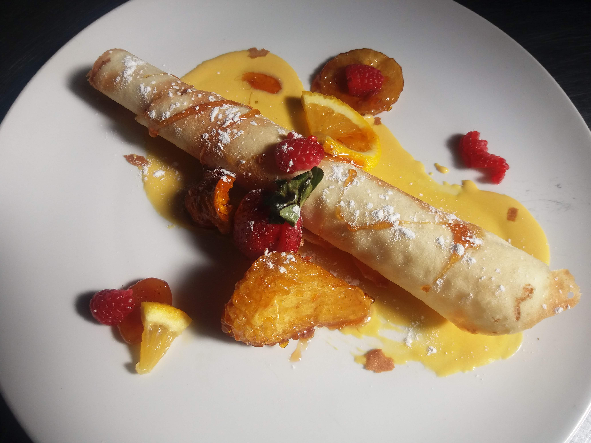
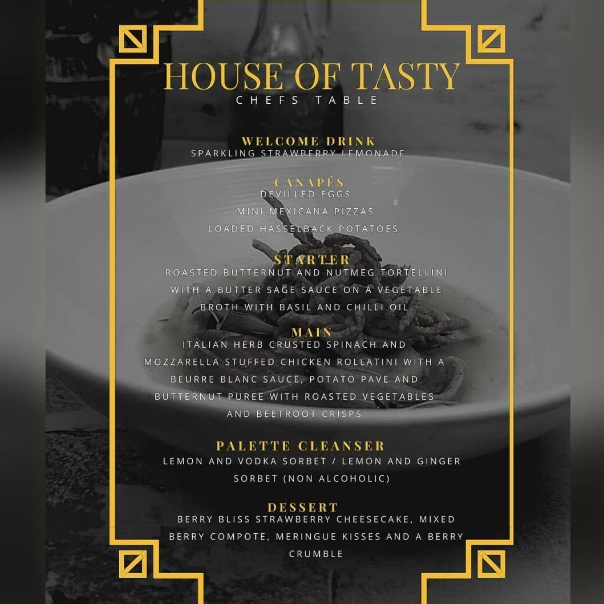
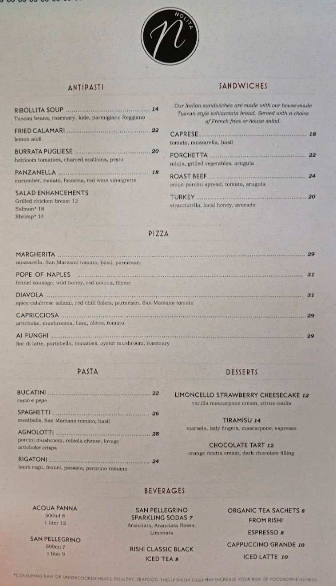
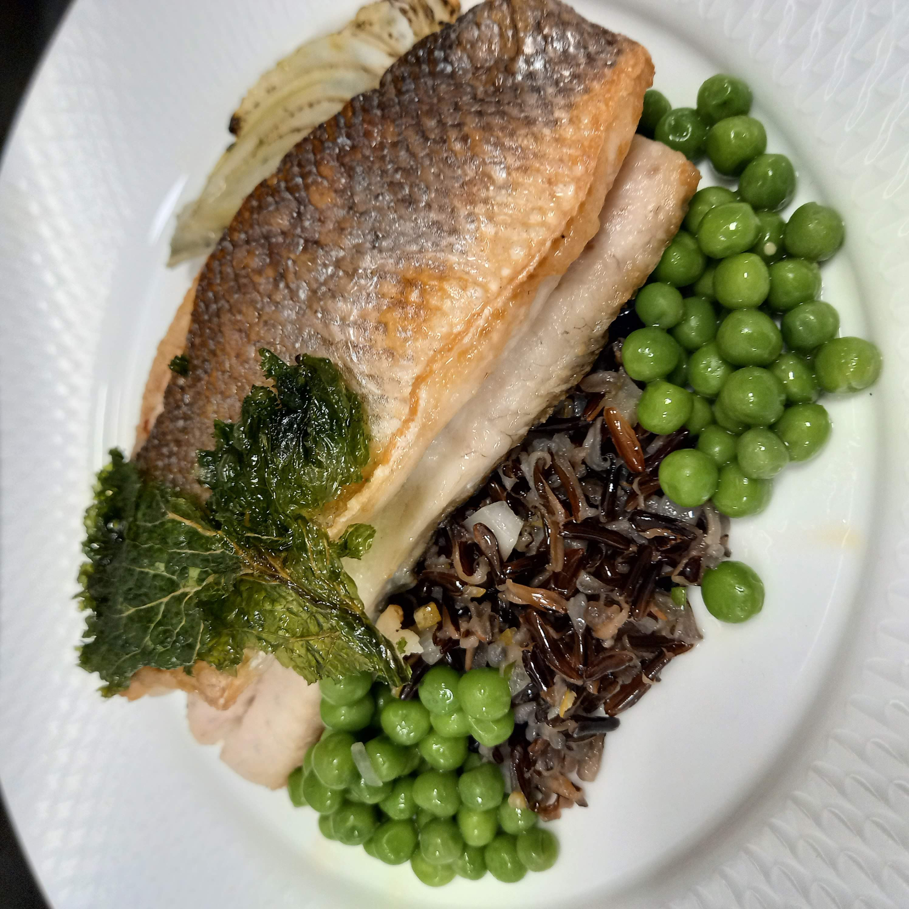
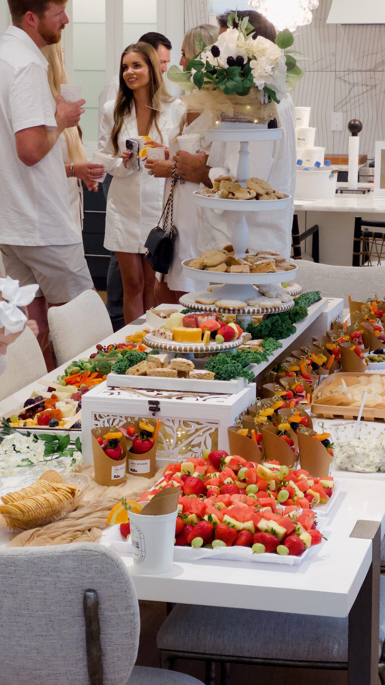
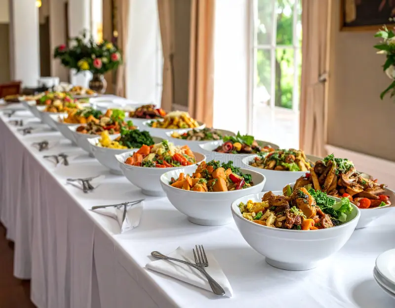

Gallery


Browse through some of my sample menus and previous culinary delights. Every dish is made with consideration of taste, appearance and the general dining experience.
Menus may be tailored to accommodate various events, tastes and dietary needs so that each client receives something suited to meet their needs.
1. Previous Menus I've Catered



Examples Of Menus I Can Create
The following are some of the menu options I can make for you. These menus are tailored to suit the nature of event and the preferences of clients.
2. Past Dishes and Events.
Take a look at some of the preparations and installations done to previous customers.
Whether it is a plated meal or a complete event setup, there is a balance of creativity and detail that is reflected in every presentation.
The gallery highlights:
- Individually plated dishes
- Event table setups
- Catering displays
- Dessert presentations




What to Expect
All dishes are made with:
- Fresh and well chosen ingredients.
- Clearly and attractive presentation.
- Flavour and balance.
The aim of this is to make meals that are not just tasty but also to make your event worthwhile.
Saw something you like?
Contact me to create your own menu and make your event happen.